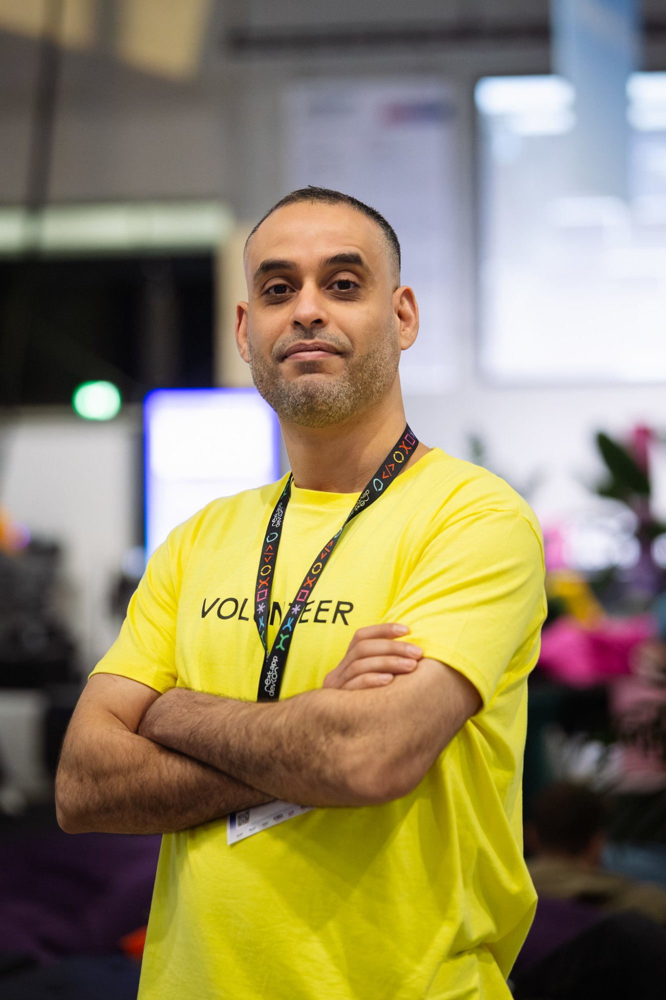
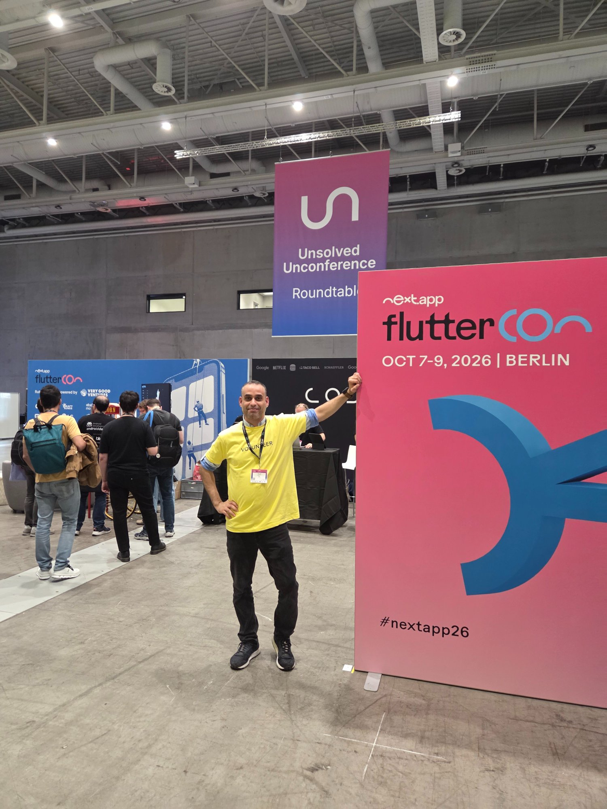
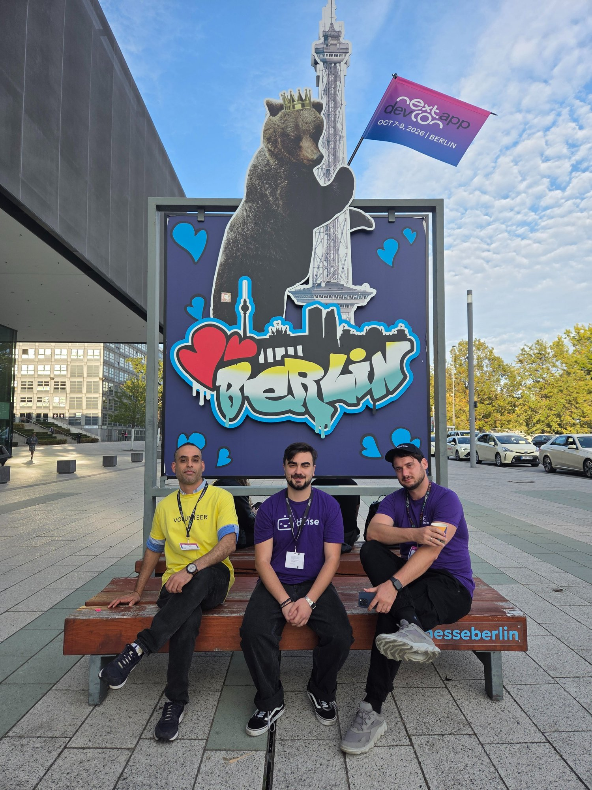
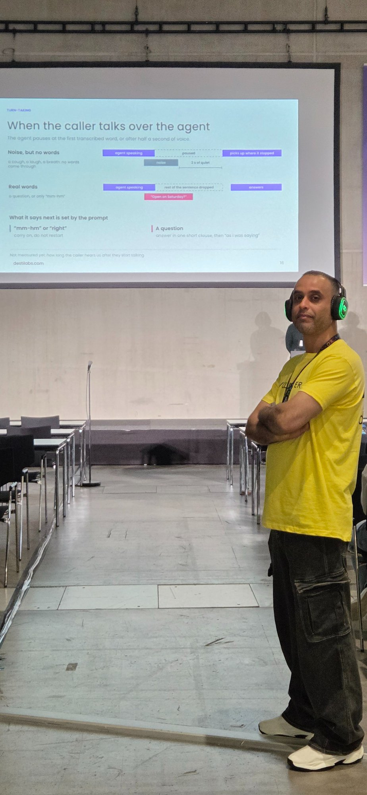
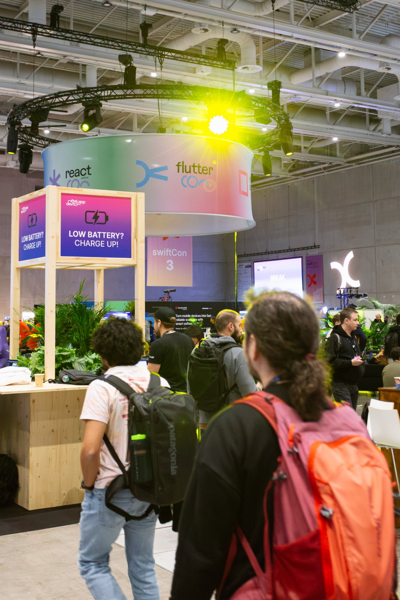

Analytisch
Komplexe Fehler strukturiert eingrenzen und Ursachen nachvollziehbar machen.
Hallo, ich bin
QA Engineer / Software Tester
Ich verbinde sechs Jahre Erfahrung in systematischer Fehleranalyse und technischer Dokumentation mit modernen Methoden der Software-Qualitätssicherung.

const qaEngineer = {
name: "Riyadh Elwalwal",
location: "Berlin, Germany",
focus: [
"Manual Testing",
"Regression Testing",
"Bug Reporting"
],
mindset: "Quality first",
status: "Ready to test"
};
Mein Profil
Ich bin QA Engineer in Berlin und habe mein analytisches Denken dort geschärft, wo Präzision, Sicherheit und schnelle Entscheidungen entscheidend sind.
Aus sechs Jahren in der Störungsdiagnose kritischer Netzinfrastruktur bringe ich systematische Fehleranalyse, sorgfältige Dokumentation und verantwortungsbewusstes Arbeiten mit. Bei der Masterschool habe ich diese Erfahrung gezielt um Software Testing, STLC, Testdesign und erste Automatisierungskenntnisse erweitert.
Komplexe Fehler strukturiert eingrenzen und Ursachen nachvollziehbar machen.
Testfälle, Ergebnisse und Defects vollständig und verständlich dokumentieren.
Auch unter Zeitdruck nach klaren Qualitäts- und Sicherheitsstandards arbeiten.
Werkzeuge & Methoden
Testtypen und Methoden, die ich manuell plane und ausführe.
Automatisierte Testausführung mit Python - hier läuft Regression Testing in Sekunden statt Stunden.
Was ich aus sechs Jahren Störungsdiagnose mitbringe.
Ausgewählte Arbeit
FEATURED PROJECT
E-Commerce QA Testing Project
Akademisches QA-Praxisprojekt im Rahmen der Masterschool-Ausbildung. Manuelle und funktionale Tests einer bereitgestellten E-Commerce-Trainingsanwendung mit Fokus auf Checkout-, Such- und Bestellprozesse. Unvollständige Anforderungen wurden analysiert, strukturierte Testfälle erstellt und Defects nachvollziehbar dokumentiert.
Hinweis: Die ursprüngliche Trainingsanwendung ist nicht mehr öffentlich verfügbar. Die vollständige Testdokumentation ist im GitHub-Repository erhalten.
Mein Weg
TECH COMMUNITY · VOLUNTEER
Unterstützung im zentralen Networking-Bereich der Konferenz. Austausch mit Fachleuten und Tech-Pionieren sowie Teilnahme an Sessions zu AI Coding Agents, Software Engineering, Mobile Development, Gaming und modernen QA-Ansätzen.
AUSBILDUNG
Abgeschlossen mit Abschlusszertifikat: 1600 Unterrichtsstunden in 32 Wochen. Inhalte: Python-Grundlagen und Fortgeschrittenes, Dateiverarbeitung und Version Control, HTML/CSS/HTTP und APIs, objektorientierte Programmierung, Back-End mit Flask, relationale Datenbanken mit SQL, Testgrundlagen, Testdesign-Techniken, Testen im SDLC, Testautomatisierung mit Selenium sowie Testausführung und Reporting.
ERFAHRUNG
Qualitätsprüfungen, Fehleranalysen sowie Vor- und Nachtests für kritische Netzinfrastruktur. Koordination zeitkritischer Entstörungseinsätze und Erstellung technischer Prüfberichte.
ERFAHRUNG
Flexible Einsätze in Produktion, Logistik und Tiefbau mit konsequenter Einhaltung von Sicherheits-, Qualitäts- und Hygienestandards.
Tech Community
VOLUNTEER · BERLIN · 7.-9. OKTOBER 2026
Als Volunteer unterstützte ich den zentralen Networking-Bereich der Konferenz - den Ort, an dem Teilnehmende, Speaker und Unternehmen miteinander ins Gespräch kamen. Dort lernte ich Fachleute und Tech-Pioniere persönlich kennen und erlebte die technische Community erstmals jenseits von Laptop und Online-Unterricht.
Neben meiner Aufgabe besuchte ich Sessions zu AI Coding Agents, Software Engineering und modernen Entwicklungsworkflows. Besonders spannend fand ich die Bereiche Mobile Development, QA und Game Technology. Die Begegnungen haben meine Motivation gestärkt, mich aktiv in der Tech-Community weiterzuentwickeln.




Aktueller Fokus
Ich bilde mich kontinuierlich weiter - nicht nur für Zertifikate, sondern weil Qualitätssicherung ein Feld ist, das sich täglich verändert.
Foundation Level (CTFL)
Ich bereite mich derzeit auf die ISTQB-Zertifizierung vor - dem international anerkannten Standard für Software-Testmethodik, Testtypen, Testdesign-Techniken und Testmanagement.
Grundlagen der Programmierung
Vertiefung meiner Python-Kenntnisse als Grundlage für Testautomatisierung mit Selenium und PyTest.
Zertifizierung in Vorbereitung
Nächster Schritt: eine Projektmanagement-Zertifizierung, um Testplanung, Priorisierung und Zusammenarbeit mit Product Ownern auf ein solides Fundament zu stellen.
Qualifikation
MSIT · Master School Institute of Technology
Spezialisierung: QA Engineering
Kontakt
Sie suchen einen engagierten QA Engineer mit technischem Hintergrund, analytischem Blick und hohem Verantwortungsbewusstsein? Ich freue mich auf den Austausch.
Nachricht schreiben↗Antwort in der Regel innerhalb von 24 Stunden.